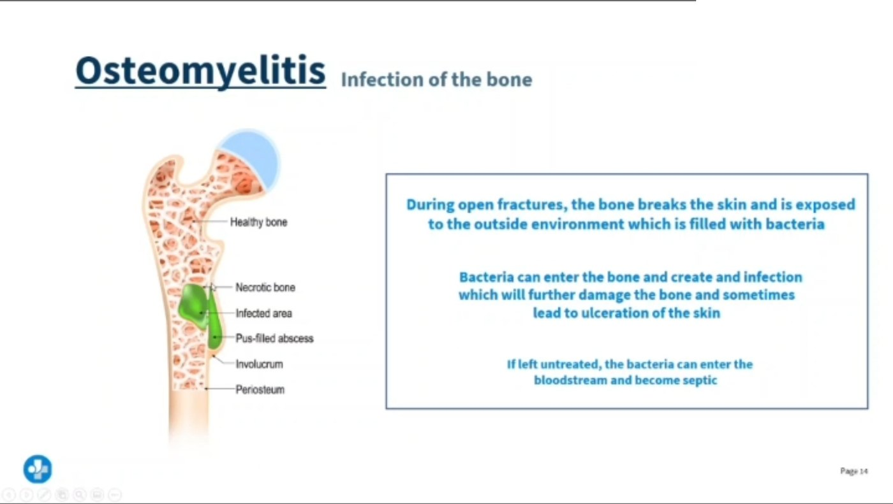
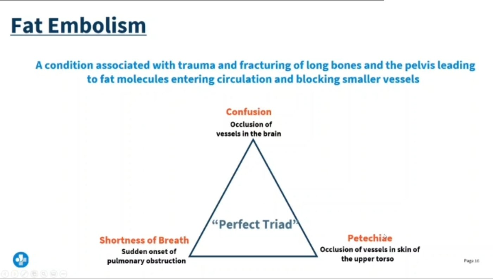

Nursing Field Notes / Musculoskeletal · Fracture & Trauma Care Series · Page 3 of 4
Fat Embolism 🫁
& Osteomyelitis — Two Fracture Complications That Aren't the 6 P's
NG-061MusculoskeletalADHD-friendly visual edition
Both of these hide behind a "routine" fracture. Fat embolism syndrome (FES) is a systemic emergency — marrow fat escapes into the bloodstream and lodges in the lungs, brain, or heart. Osteomyelitis is a bone infection that follows an open fracture, surgery, or puncture. Neither one is caught by the 6 P's from the Fracture page — those check the limb's blood flow; FES and osteomyelitis are whole-body problems layered on top.
🫁 The classic triadRespiratory distress + mental status change + petechial rash = FES until proven otherwise.
⏱️ 24–72 hoursFES classically shows up 1–3 days after a long-bone or pelvic fracture.
🌡️ 103°F + yellow drainageHigh fever + purulent drainage at a puncture/surgical site = think osteomyelitis.
🏠 PICC + weeks of antibioticsOsteomyelitis treatment goes home with the patient — IV antibiotics for weeks to months.
🫁
FAT EMBOLISM
STEP 1 · THE CLOT THAT ISN'T A CLOT
Marrow fat, not a blood clot, blocks the vessel — but the destinations are just as deadly: lung, brain, heart.

From your lecture. Follow the route: an open fracture exposes bone → bacteria enter → ulceration → if left untreated, septicemia.

From your lecture. The perfect triad — confusion, sudden shortness of breath, petechiae over the upper torso — after a long-bone or pelvic fracture.
🩻 Pathophysiology — bone marrow escapes into the bloodstream
Fat embolism syndrome is a major complication of crushing fractures & long-bone injuries — femur, pelvis, and hip fractures carry the highest risk. The injured bone releases fat globules from the marrow directly into torn venous sinusoids. Those globules travel through the bloodstream and — just like a blood clot — can lodge somewhere far from the fracture, causing a deadly blockage in the lung (respiratory failure), brain (stroke-like picture), or heart (MI-like picture).
A deteriorating patient after a fracture needs prompt assessment, not attribution to routine pain.
Read the picture
Long-bone or tissue injury
Can release fat into the circulation.
Infection reaches bone
Can occur through blood, injury or surgery.
Different complications
Respiratory-neurologic change differs from focal bone infection.
Fat embolism syndrome
Hypoxemia, neurologic change and sometimes petechiae after injury need urgent evaluation.
Osteomyelitis
Bone pain, inflammatory signs or drainage may occur; fever can be absent.
Care
Support oxygenation when needed and follow imaging, cultures and antimicrobial or surgical plans.
🧠 "Fat travels like a clot but comes from bone, not blood." Any long-bone or pelvic fracture, or the IM rod surgery used to fix one, can release marrow fat — think of it as an embolism with a different source, same deadly destinations.
🚨 The classic triad — memorize this exact set of three
🧠 "Confused, can't breathe, covered in dots." All three don't have to appear at once — mental status change is often the earliest clue, before the rash ever shows up. Petechiae are the most specific finding but frequently arrive last.
⚠️ Risk factors & timing
🦴 Long-bone fractures — femur is the classic culprit
🩹 Pelvic fractures
💥 Multiple fractures / crush injuries
🔩 Orthopedic surgery, especially IM rod/nail placement
🧠 Closed fractures can carry higher FES risk than open ones — the marrow pressure has nowhere to release except into the bloodstream.
🧪 Supporting clues
📉 Low pulse ox — hypoxia often precedes the rash
🩸 Thrombocytopenia — platelets consumed with fat globules
🌡️ Fever & tachycardia
💓 Tachypnea, chest pain, crackles
KAPLAN An older adult client is diagnosed with a fractured femur. Which observation is an early sign of fat embolism?
Answer: altered mental status — it can precede the dyspnea and the rash.
🦴
OSTEOMYELITIS
STEP 2 · BONE INFECTION
Bacteria gets INTO the bone through a break in the barrier — then the immune response and the infection both damage the bone.
🚪 Pathophysiology — four doors bacteria use to reach bone
Osteomyelitis is a bone infection, most often caused by Staphylococcus aureus, that enters the bloodstream — and then the bone — through one of these routes:
🧠 "If it breaches the skin near a bone, it can breach the bone." Open fracture, surgery, puncture, or needle — all four are just different doors to the same infection.
🌡️ Signs & symptoms
🔥 High fever — often high-grade (a commonly used exam example is ~103°F / 39.4°C)
😣 Localized bone pain, constant, worse with movement
🟠 Swelling, warmth, erythema over the site
💛 Pus or yellow drainage from a wound or puncture site
🧠 Fever + yellow drainage days after a procedure = infection, not just "normal healing." Report it — don't wait it out.
🧪 Labs & diagnostics
KAPLAN Several days after a bone marrow aspiration, the nurse notes a client's temp of 103°F (39.5°C) and yellow drainage from the aspiration site. Most accurate interpretation?
Answer: the client has developed osteomyelitis.
🩺
CARE
STEP 3 · TREAT & MONITOR
FES is stabilized and supported; osteomyelitis is fought with weeks of antibiotics and, if needed, surgery.
💊 Osteomyelitis treatment ladder
1
IV antibiotics for weeks to months — targeted to the organism found on culture
2
Discharge home with a PICC line — a home-health nurse continues the long IV antibiotic course
3
Surgical debridement — drains abscesses and removes necrotic/dead bone tissue
4
Amputation — only if the infection doesn't respond to therapy
🧠 "PICC line goes home too." Osteomyelitis is one of the classic reasons a patient is discharged still on IV antibiotics — teach PICC site care, flushing, and signs of line infection before they leave.
🫁 FES management — supportive & preventive
🩹 Minimize movement of the fracture — immobilize/splint early, this is the #1 prevention step
🫁 Oxygen — may progress to mechanical ventilation if severe
💧 IV fluids to maintain hemodynamic stability
🛏️ Bed rest, continuous pulse ox & LOC monitoring
🧠 Prevention beats treatment here. There's no antidote for fat emboli once released — the nursing priority is keeping the fracture still so fewer globules ever enter the bloodstream.
🚨 FES — recognize fast, and know what "getting better" looks like
The classic triad (respiratory distress + mental status change + petechial rash) after a long-bone or pelvic fracture is a medical emergency — notify the HCP immediately.
SAUNDERS What is the most favorable indication of resolution of the fat embolism?
Answer: clear mentation. Improving mental status — not the rash fading — is the reassuring sign that oxygenation and cerebral perfusion are recovering.
🖐️ Not the same checklist as the 6 P's
The 6 P's from the Fracture page (pain, pallor, pulselessness, paresthesia, paralysis, poikilothermia) assess local blood flow and nerve function in the injured limb itself.
FES and osteomyelitis are different problems — FES is a systemic embolic event hitting lungs/brain/heart; osteomyelitis is a localized bone infection with systemic fever. Keep running the 6 P's on the limb and watching for these two complications — they aren't mutually exclusive.
🧠 One patient, three checklists: 6 P's for the limb, the triad for FES, fever + drainage for osteomyelitis.
⚔️ Tell them apart — side by side
Fat Embolism Syndrome
Osteomyelitis
Onset: 24–72 hrs after fracture
Onset: days after fracture, surgery, or puncture
Marrow fat blocks vessels (lung/brain/heart)
Bacteria infects bone tissue
Triad: respiratory distress, mental status change, petechiae
High fever, localized pain, yellow drainage
PRIORITY: O2, immobilize, notify HCP now
PRIORITY: IV antibiotics, wound/PICC care, notify HCP
⚡
QUICK RECALL
SAY IT OUT LOUD
🫁 FES triadrespiratory distress + mental status change + petechiae
⏱️ 24–72 hrsafter a long-bone or pelvic fracture
🌡️ 103°F + yellow drainage= think osteomyelitis
🏠 PICC line homeweeks-to-months of IV antibiotics
🎯 Cover & check — 4 rapid-fire questions
Q1: What are the three findings in the classic fat embolism triad?
Respiratory distress, altered mental status, and a petechial rash (chest/neck/axilla/conjunctiva). Mental status change is often the earliest.
Q2: What is the single best way to prevent fat embolism syndrome after a fracture?
Minimize movement of the fracture — immobilize/splint it early so less marrow fat is released into the bloodstream.
Q3: How does bacteria typically reach bone to cause osteomyelitis?
Open fracture, after surgery, a puncture wound (e.g., dog bite), or a contaminated needle such as bone marrow aspiration.
Q4: A patient with osteomyelitis is being discharged. What should the nurse expect to teach?
PICC line care — the patient goes home on weeks-to-months of IV antibiotics with home-health nursing visits.
How a long-bone fracture becomes respiratory failure — marrow fat into the bloodstream, pulmonary capillary obstruction, hypoxemia. Practice question underneath. — swipe it sideways if it is cut off, or tap to open it full size.
Saved study graphics from your own collection. Each one is someone else’s work — check anything clinical against your course materials before you rely on it.
New diagram references
These newly drawn concept diagrams consolidate the retired illustration sets. The accompanying study notes and original handout links remain on this page.